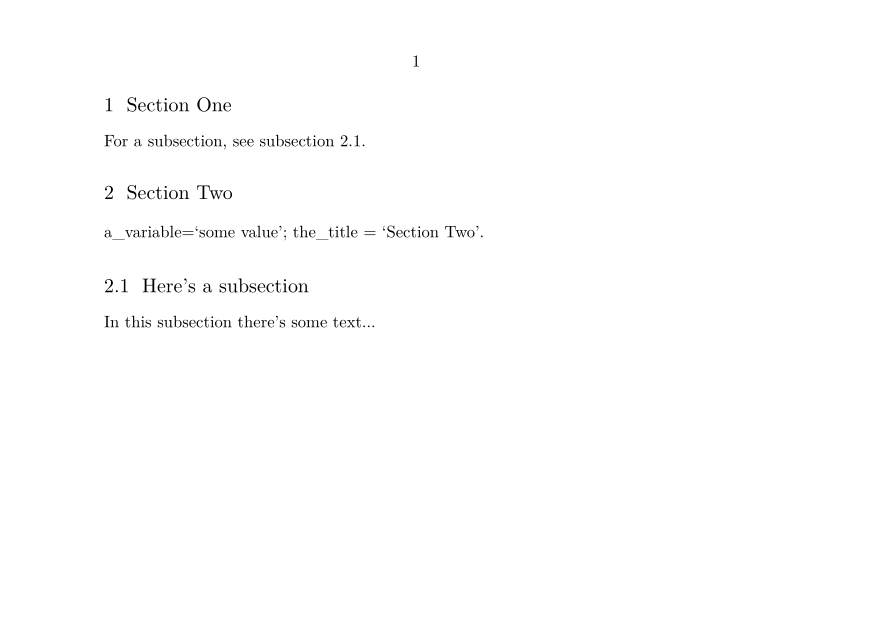
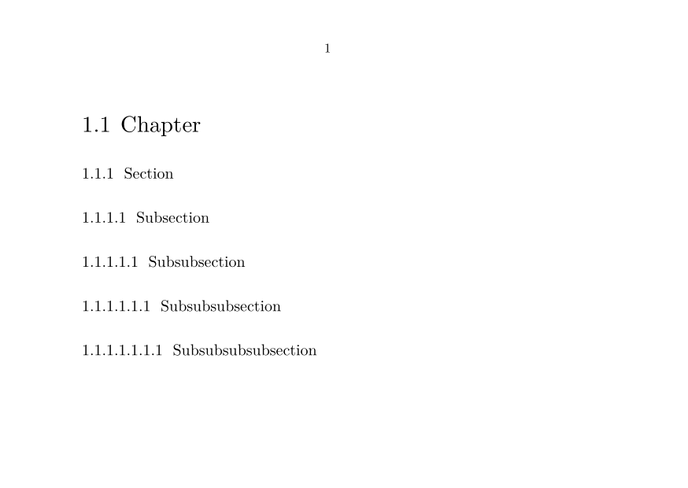

Contents
Summary
The instances of \startsection ... \stopsection are used for wrapping a section text in an environment and typesetting its title.
Instances
| \startpart ... \stoppart | highest level of sectioning |
| \startchapter ... \stopchapter | level 2 |
| \startsection ... \stopsection | level 3 |
| \startsubsection ... \stopsubsection | level 4 |
| \startsubsubsection ... \stopsubsubsection | level 5 |
| \startsubsubsubsection ... \stopsubsubsubsection | level 6 |
| \startsubsubsubsubsection ... \stopsubsubsubsubsection | level 7 |
| \starttitle ... \stoptitle | level 2, unnumbered |
| \startsubject ... \stopsubject | level 3, unnumbered |
| \startsubsubject ... \stopsubsubject | level 4, unnumbered |
| \startsubsubsubject ... \stopsubsubsubject | level 5, unnumbered |
| \startsubsubsubsubject ... \stopsubsubsubsubject | level 6, unnumbered |
| \startsubsubsubsubsubject ... \stopsubsubsubsubsubject | level 7, unnumbered |
Settings instance
| \startSECTION[...=...,...][...=...,...] ... \stopSECTION | |
| title | text |
| bookmark | text |
| marking | text |
| list | text |
| reference | reference |
| ownnumber | text |
| placeholder | text |
| key | value |
| Option | Explanation | ||
|---|---|---|---|
| The first argument defines the visible and cross-referencing properties of the section. The argument values can be recalled with the \namedstructurevariable command. | |||
| title |
|
||
| bookmark |
|
||
| marking |
|
||
| list |
|
||
| reference |
|
||
| ownnumber |
|
||
| The second, optional, argument allows section-local user-variables to be assigned. The values of these variables can be recalled with the \structureuservariable command or the \namedstructureuservariable command. | |||
Description
The new commands, collectively documented here, are \startpart, \startchapter, \startsection, \startsubsection, \startsubsubsection, \starttitle, \startsubject, \startsubsubject, and \startsubsubsubject. These more verbose commands apply an environment (\start- and \stop-) approach to sectioning, which is more friendly to tagged-PDF, ePUB and XML output.
Sectioning is hierarchical. Numbered parts are divided into numbered chapters, themselves divided into numbered sections, subsections, and subsubsections etc. Chapters and sections etc. have unnumbered counterparts called titles, subjects, subsubjects, and subsubsubjects etc., respectively. (There are actually a couple more sub-levels than listed here.) Chapters start a new page (by default—this is easily configurable). Parts are unusual in two respects: firstly, there is no unnumbered counterpart to parts; and secondly, the title of a part is not typeset automatically, as it will generally require special attention and design.
Additional section types can be defined (based on one of the existing sections) with the \definehead command. A user-defined section type will have its own \start- and \stopsection commands, in addition to a traditional \section command. These new commands will behave as documented here
The typesetting of section types (both built-in and user-defined) can be controlled with the \setupheads and \setuphead commands.
Examples
Example 1
-
\setuppapersize[A6,landscape] \starttext \startsection[ reference=sec:One, title={Section One}, ] For a subsection, see \in{subsection}[sec:Two:Sec]. \stopsection \startsection[ reference=sec:Two, title={Section Two}, ] [a_variable={some value}] a_variable=\quote{\structureuservariable{a_variable}}; the_title = \quote{\namedstructurevariable{section}{title}}. \startsubsection[ reference=sec:Two:Sec, title={Here’s a subsection}, ] In this subsection there’s some text\ldots \stopsubsection \stopsection \stoptext
produces
- 
Example 2
-
\setuppapersize[A6,landscape] \setuphead[chapter][page=no] \starttext \startpart[title={Part}] \startchapter[title={Chapter}] \startsection[title={Section}] \startsubsection[title={Subsection}] \startsubsubsection[title={Subsubsection}] \startsubsubsubsection[title={Subsubsubsection}] \startsubsubsubsubsection[title={Subsubsubsubsection}] \stopsubsubsubsubsection \stopsubsubsubsection \stopsubsubsection \stopsubsection \stopsection \stopchapter \stoppart \stoptext
produces
- 
Notes
See also
- section for the superceded commands
- \definehead
- \setuphead
- \setupheads
- strc-sec.mkiv
- Document structure and headlines
Help from ConTeXt-Mailinglist/Forum
All issues with:
- \startpart on the mailing list (all results)
- \startpart on the mailing list (subject only)
- \startpart on stack exchange
- \startpart in ConTeXt's source
- \startchapter on the mailing list (all results)
- \startchapter on the mailing list (subject only)
- \startchapter on stack exchange
- \startchapter in ConTeXt's source
- \startsection on the mailing list (all results)
- \startsection on the mailing list (subject only)
- \startsection on stack exchange
- \startsection in ConTeXt's source
- \startsubsection on the mailing list (all results)
- \startsubsection on the mailing list (subject only)
- \startsubsection on stack exchange
- \startsubsection in ConTeXt's source
- \startsubsubsection on the mailing list (all results)
- \startsubsubsection on the mailing list (subject only)
- \startsubsubsection on stack exchange
- \startsubsubsection in ConTeXt's source
- \startsubsubsubsection on the mailing list (all results)
- \startsubsubsubsection on the mailing list (subject only)
- \startsubsubsubsection on stack exchange
- \startsubsubsubsection in ConTeXt's source
- \startsubsubsubsubsection on the mailing list (all results)
- \startsubsubsubsubsection on the mailing list (subject only)
- \startsubsubsubsubsection on stack exchange
- \startsubsubsubsubsection in ConTeXt's source
- \starttitle on the mailing list (all results)
- \starttitle on the mailing list (subject only)
- \starttitle on stack exchange
- \starttitle in ConTeXt's source
- \startsubject on the mailing list (all results)
- \startsubject on the mailing list (subject only)
- \startsubject on stack exchange
- \startsubject in ConTeXt's source
- \startsubsubject on the mailing list (all results)
- \startsubsubject on the mailing list (subject only)
- \startsubsubject on stack exchange
- \startsubsubject in ConTeXt's source
- \startsubsubsubject on the mailing list (all results)
- \startsubsubsubject on the mailing list (subject only)
- \startsubsubsubject on stack exchange
- \startsubsubsubject in ConTeXt's source